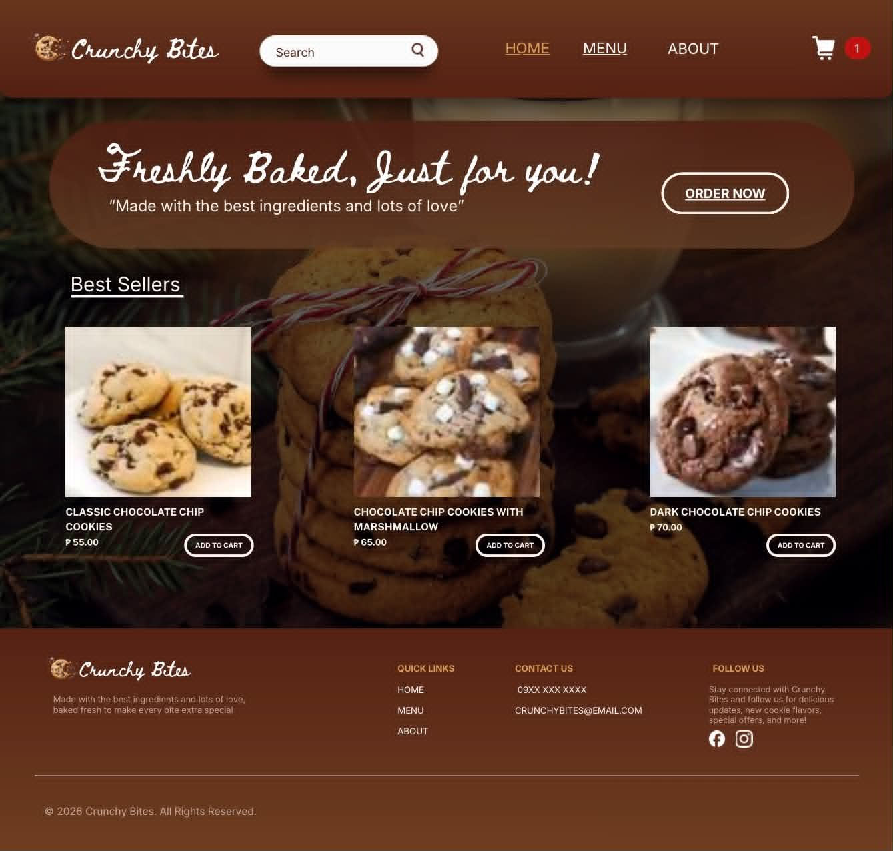
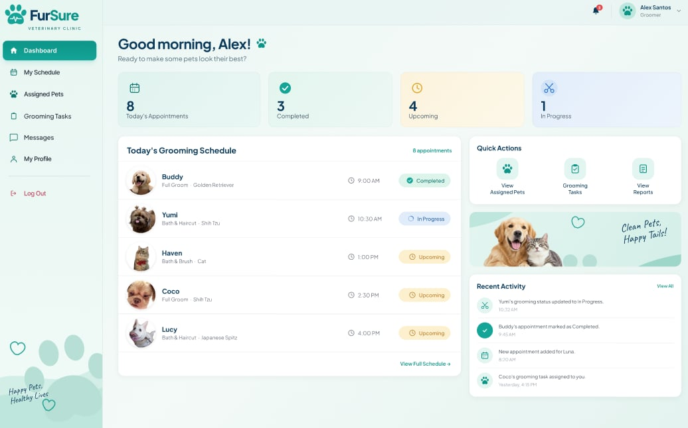

Crunchy Bites Website
An online shop for freshly baked cookies. Visitors can browse the cookie flavors, view prices and descriptions, add favorites to a cart, and place an order from any device. The warm, playful layout makes the menu easy to scan and the checkout simple to finish.
HTMLCSSJavaScriptE-commerce UI

FurSure Veterinary Clinic Website
A clinic website for pet owners to book veterinary appointments online. It includes a login page and a dashboard for clinic staff, with clear forms for choosing a service, date and time, so owners spend less time calling and the clinic keeps its schedule organized.
HTMLCSSJavaScriptUI/UX designAppointment booking